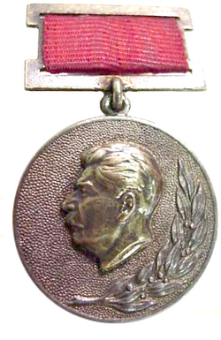
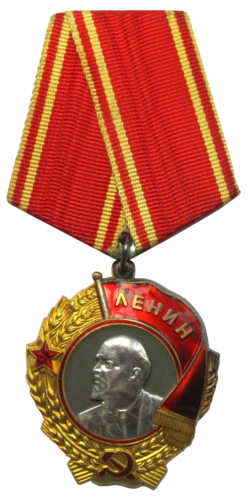
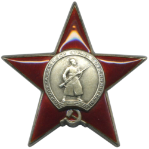
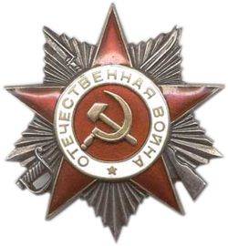
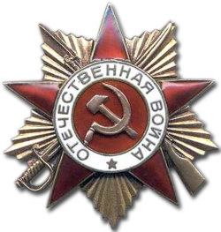
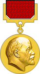
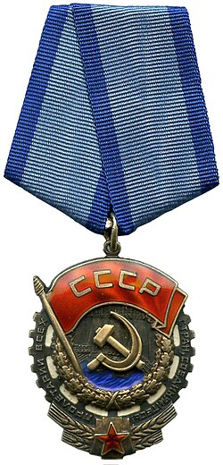

Александр Трифонович Твардовский появился на свет 8 (21) июня 1910 года на небольшом хуторе Загорье к юго-востоку от Смоленска в семье деревенского кузнеца Трифона Гордеевича Твардовского и его супруги Марии Митрофановны, урождённой Плескачевской, происходившей из крестьян-однодворцев. Семья Твардовских была большой: помимо будущего писателя, в ней росли четыре его брата и две сестры.
Родители воспитывали в детях любовь к русской культуре и литературе: отец вечерами часто читал им вслух произведения классиков – А.С. Пушкина, Н.В. Гоголя, М.Ю. Лермонтова, Л.Н. Толстого, Н.А. Некрасова. С детства Александр Твардовский чувствовал интерес к творчеству: первые стихи он сочинял, ещё не научившись читать и писать. С юности он увлёкся и журналистикой: в 1924 году подросток опубликовал первые газетные заметки. Год спустя в газете Смоленская деревня
напечатали первое стихотворение 15-летнего поэта «Новая изба».
Когда Твардовскому исполнилось 18 лет, он уехал в Смоленск. Литературным наставником и близким другом Твардовского стал работавший редактором одной из местных газет М.В. Исаковский – именно ему молодой Твардовский показывал свои первые стихотворения. В 1928 году Александр вступил в Ассоциацию пролетарских писателей. Вскоре он заявил о себе как профессиональный литератор, выпустив к 1935 году более сотни стихотворений, поэму и даже книгу стихов.
Поступив в 1932 году в Смоленский пединститут, в 1936 году Твардовский решил перебраться в столицу. Там он перевёлся в Московский институт философии, литературы и истории, который окончил в 1939 году. К этому времени он уже состоялся как поэт Он уже стал признанным мастером и получил официальное признание – его удостоили ордена Ленина, награды высокой и почётной.
Во время советско-финской войны 1939–1940 гг. Твардовский в звании батальонного комиссара работал военным корреспондентом в красноармейской газете Ленинградского военного округа На страже Родины
. Именно здесь в результате коллективного труда редакции впервые родился как персонаж красноармеец Василий Тёркин.
В годы Великой Отечественной войны подполковник Твардовский вновь в действующей армии – сначала в газете Красная Армия
Юго-Западного фронта, затем в газете Западного (позднее 3-го Белорусского) фронта Красноармейская правда
, вместе с которой он закончил войну в Восточной Пруссии. На страницах этих газет впервые появлялись эпизоды самой известной поэмы Твардовского – яркие и живые стихотворные рассказы о подвигах солдата Василия Тёркина, которые быстро принесли автору всенародную славу. Их с большой охотой перепечатывали центральные издания.
В послевоенные годы Александр Трифонович продолжал свою литературную и журналистскую деятельность. В 1950 году он стал главным редактором журнала Новый мир
– одного из старейших толстых
отечественных литературных журналов. В руках Твардовского Новый мир
превратился в самое либеральное из подцензурных изданий того времени, а сам главный редактор стал проводником в мир большой литературы для многих знаменитых ныне писателей. Произведения, критикующие сталинизм и советское бюрократическое устройство в целом, в том числе авторства самого Твардовского, не могли остаться незамеченными, и в 1954 году решением ЦК КПСС его сняли с должности главного редактора.
Впрочем, несколько лет спустя ему опять предложили возглавить журнал, и с 1958 по 1970 гг. Твардовский вновь печатал на страницах Нового мира
Василя Быкова, Фёдора Абрамова, Юрия Трифонова, Юрия Домбровского и Александра Солженицына. Новый мир
стал не только символом оттепели
и одним из культовых изданий для шестидесятников
, но и прекрасной школой для начинающих литераторов. Сам Твардовский выступил грамотным наставником, бережным, внимательным и чутким редактором для молодых авторов и защитником для опытных, но не обласканных любовью властей писателей. Твардовский не боялся сражаться с цензурой Он смело противостоял цензуре и отстаивал право талантливых авторов на публикацию.
Александр Трифонович Твардовский был женат на Марии Илларионовне Гореловой (1908–1991), с которой познакомился в институтской библиотеке в Смоленске. Их союз оказался долгим и счастливым, через всю жизнь супруги пронесли любовь, преданность и трепетное, нежное отношение друг к другу. Мария Илларионовна на четыре десятилетия стала для мужа ближайшей помощницей, другом, опорой и поддержкой в любых трудностях.
Вскоре после роспуска редакции Нового мира
и увольнения с должности главного редактора Александр Трифонович Твардовский перенёс тяжёлый инсульт. В ходе лечения при обследовании врачи обнаружили у него рак лёгких в тяжёлой форме. Паралич, отсутствие речи и быстро прогрессировавшее онкологическое заболевание сделали последние месяцы жизни писателя невыносимо мучительными. Смерть Твардовского наступила 18 декабря 1971 года Он ушёл из жизни 18 декабря 1971 года. Могила писателя находится на Новодевичьем кладбище в Москве.
| Год | Награда | За какие заслуги |
|---|---|---|
| 1941 |  Сталинская премия второй степени | Поэма «Страна Муравия» (1936) |
| 1939[54]-1967 |  Три ордена Ленина | Получены а поэму «Страна Муравия» и литературную деятельность, в 1960 году — за поэму «За далью — даль» и редакторскую работу в «Новом мире», в 1967 году — за выдающиеся заслуги в развитии советской литературы. |
| 1940 |  Орден Красной Звезды | Участие в советско-финской войне (1939—1940) |
| 1944 |  Орден Отечественной войны II степени | За литературную работу на фронте — создание поэм «Василий Тёркин» и «Дом у дороги», очерков об освобождении Белоруссии и выступления перед бойцами в составе редакции газеты «Красноармейская правда». |
| 1945 |  Орден Отечественной войны I степени (30.04.1945) | За улучшение содержания газеты «Красноармейская правда» — написание очерков о боях в Восточной Пруссии и повышение воспитательной роли издания в период Великой Отечественной войны. |
| 1946 | Сталинская премия I степени | Поэма «Василий Тёркин» |
| 1947 | Сталинская премия II степени | Поэма «Дом у дороги» |
| 1961 |  Ленинская премия | Поэма «За далью — даль» |
| 1970 |  Орден Трудового Красного Знамени | За выдающиеся заслуги в развитии советской литературы и в связи с 60‑летием со дня рождения — в т. ч. за редакторскую работу в журнале «Новый мир» и литературное творчество. |
| 1971 | Государственная премия СССР | Сборник «Из лирики этих лет. 1959–1967» |